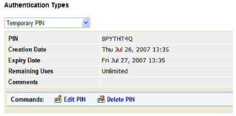
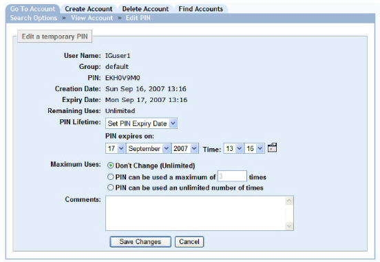
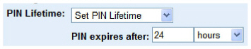
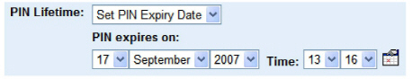

|
IdentityGuard Server 12.0 Administration Guide |
|
IdentityGuard Server 12.0 Administration Guide |
If a temporary PIN has expired or is about to expire, you can modify the expiry information so a user can still authenticate with the temporary PIN. Modify the temporary PIN if the user still does not have a valid card or token at the time when the temporary PIN expires.
The default temporary PIN lifetime, expiry date, and maximum number of uses are set by temporary PIN policies. When modifying a temporary PIN for a user, administrators can override these defaults if their role includes the userPinOverridePolicy permission.
Any changes made to temporary PINs take effect the next time they are used for authentication.
To modify a user’s temporary PIN information
1. Log in to the Entrust IdentityGuard Administration interface as the administrator.
 On the
Windows computer where Entrust IdentityGuard is installed
On the
Windows computer where Entrust IdentityGuard is installed
2. Click User Account from the main menu.
3. Find a specific user in one of two ways:
● use the Go To Account tab (see To search for information about one user)
● use the Find Accounts tab (see To search for information about one or more users)
The View Account page for the user appears.

4. Under Authentication Types, select Temporary PIN, and then click Edit PIN.
The Edit PIN page appears.

5. To the right of PIN Lifetime, select when the temporary PIN expires. Choose from:
● Default — The temporary PIN policies determine when the temporary PIN expires.
● Set Pin Lifetime — Additional options appear. Specify a length of time by entering a number in the text field and then selecting a time value from the drop-down list (hours, days, months).

● Set PIN Expiry Date — Additional options appear. Specify a date and time by selecting a date from the PIN expires on drop-down lists (day, month, year), and then selecting a time from the Time drop-down lists (hour, minute). Alternatively, click the calendar icon to select a date.

● PIN Never Expires — The temporary PIN never expires.
6. To the right of Maximum Uses, click one of the following options to set how many times a user can authenticate with the temporary PIN:
● Don’t Change — The original setting does not change.
● PIN can be used a maximum number of times — Enter a number in the text field to change the number of times a user can authenticate with the temporary PIN.
● PIN can be used an unlimited number of times — The user can authenticate with the temporary PIN until it expires or is deleted.
7. Optional. In the Comments box, enter or edit comments.
8. Click Save Changes.
The View Account page reappears.